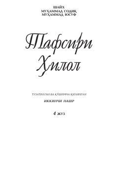

THQur'oni Karimning to'rtinchi jild tafsiri va sharhi.
Bu kitob 'Tafsiri Hilol' seriyasining to'rtinchi qismi bo'lib, Qur'oni Karimning oyatlari izohli tafsiri va sharhi berilgan. Muallif Muhammad Sodiq Muhammad Yusuf tomonidan yozilgan ushbu asar musulmon kitobxonlar uchun mo'ljallangan. Kitobda oyatlarning ma'nolari, sababi nuzullari va diniy-ilmiy izohlari keltirilgan.